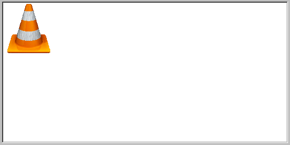
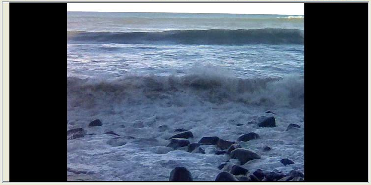

|
class VLCPlayer : public DHCtrlActiveX
As seen in layout designer:

As seen in program:

VLCPlayer is a control to play video and audio files. Audio and video are handled by member functions.
To run properly VLCPlayer requires to install previously VideoLAN in the system.
As this control is based in DHCtrlActiveX it can only work in Windows.
VLCPlayer()
Initializes VLCPlayer.
bool AddTarget(const String file)
Selects file to be the clip to be played.
Returns true if ok.
bool Play()
Plays as in the normal player, if a clip is not loaded, does nothing.
Returns true if ok.
bool Pause()
Pauses the currently playing clip.
Returns true if ok.
bool PlayFaster()
Makes the currently playing clip play faster.
Returns true if ok.
bool PlaySlower()
Makes the currently playing clip play slower.
Returns true if ok.
bool Stop()
Makes the currently playing clip stop.
Returns true if ok.
bool Shuttle(long secs)
Moves the playback position a specified number of seconds secs in either direction.
Returns true if ok.
bool IsPlaying()
Returns whether some clip is playing.
Returns true if ok.
int GetVolume()
Gets current volume (scaled from 0 to 100).
Returns true if ok.
bool PutVolume(int volume)
Sets current volume (scaled from 0 to 100) with volume.
Returns true if ok.
int GetTime()
Gets time elapsed in miliseconds playing current clip, 0 for live feed or -1 if there is any problem.
bool PutTime(int mseconds)
Sets time position elapsed in miliseconds playing current clip with mseconds.
Returns true if ok.
float GetPosition()
Gets playback position within current clip, scaled from 0.0 to 1.0. Live feed returns 0.0.
Returns true if ok.
bool PutPosition(float position)
Sets playback position within current clip, scaled from 0.0 to 1.0 with position. Live feed returns 0.0.
Returns true if ok.
int GetLength()
Returns length of the current clip in miliseconds or -1 if there is any problem.
|
{kind=link}
{kind=link}